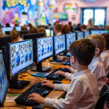

Exploring how computers enhance learning, work, and communication
Computers shape modern life by influencing how we work, communicate, learn, and solve everyday problems. They make tasks faster and more efficient, from online banking and remote work to digital communication through emails and social media. Computers also power innovations in healthcare, transportation, business, and entertainment, making life more convenient and connected.
Comupters for Individuals
As individuals, students use computers to develop important personal skills such as typing, problem-solving, online communication, and digital creativity. They complete assignments, create presentations, practice coding, and explore their academic interests using different software. Computers also help students learn at their own pace through personalized learning platforms, giving them the freedom to review topics or move ahead when ready.
Improved life with Computers
Computers have also become part of everyday life, shaping how people learn, work, and communicate. Outside the classroom, students use computers to connect with others, play educational games, learn new skills, and stay informed about the world. The ability to use computers effectively prepares them for future careers, as most modern jobs require digital knowledge. In this way, computers support lifelong learning and help students become confident, capable members of the digital society.
Computers in the classroom

Computers have become essential tools in schools because they make learning faster, easier, and more interactive. Students can access digital textbooks, watch educational videos, use learning apps, and research any topic instantly. Teachers also use computers to prepare lessons, display slides, and manage student records, making the teaching process more organized and efficient
The Role and the Road Ahead
Computers play a vital role in education by making learning more efficient, interactive, and personalized. They help students develop essential digital skills, complete assignments, and explore information easily. Beyond school, computers are part of everyday life, shaping how people work, communicate, and learn, preparing students for a technology-driven future.